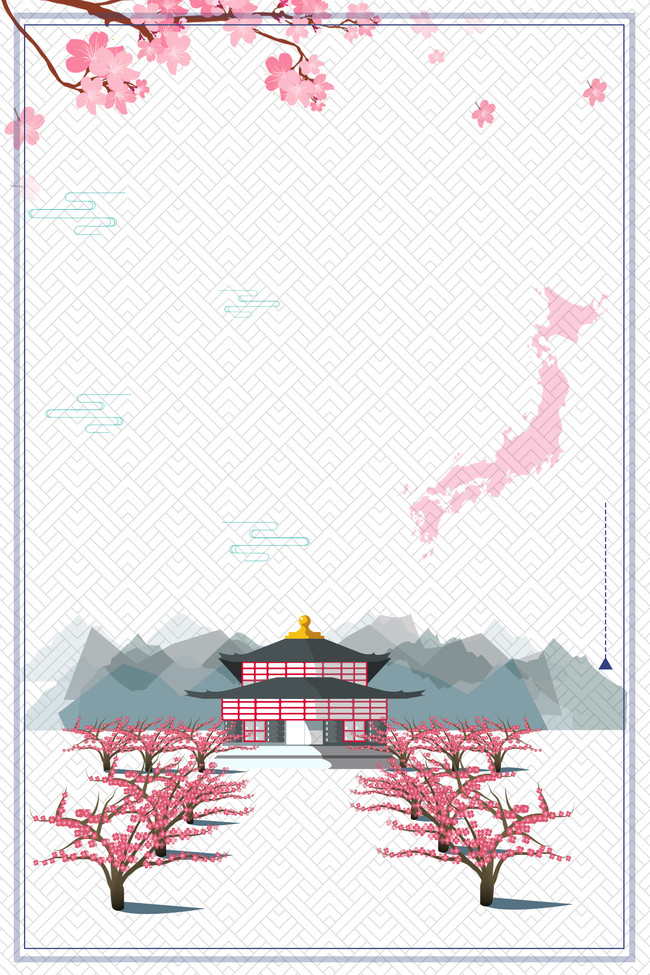
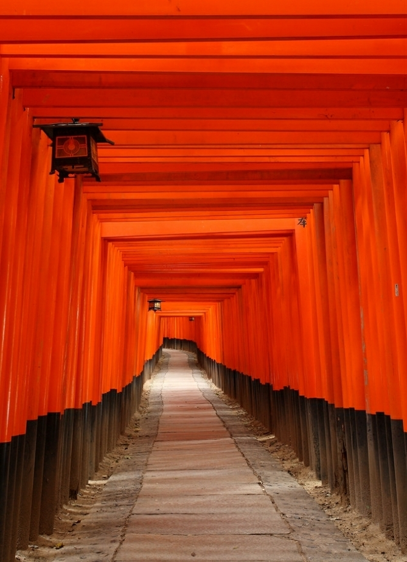
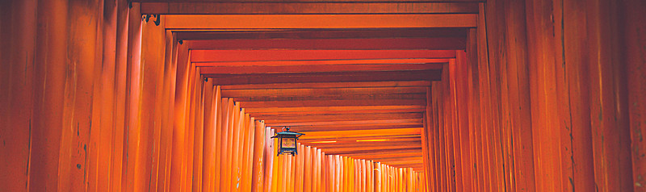
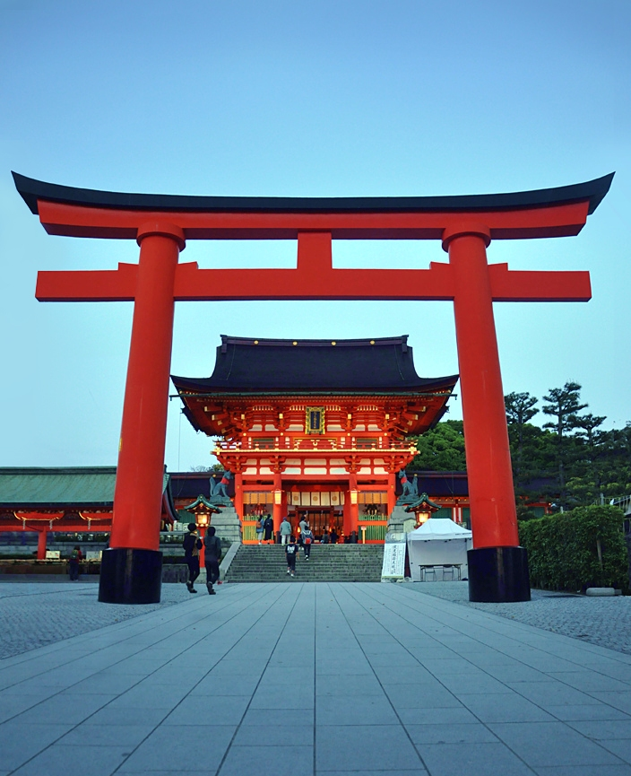
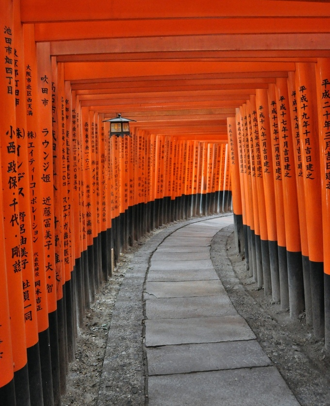

Jika mengunjungi kuil ini tentunya tidak ketinggalan juga untuk melewati sekitar 10.000 Torii (gerbang) yang merupakan ikon
dari Kuil Fushimi Inari tersebut. Gerbang tersebut konon merupakan gerbang yang disumbangkan oleh para pengikutnya di jaman dulu sebagai
persembahan kepada para Dewa.
Jika berkunjung ke kuil ini, jangan lupa juga untuk menulis 'Ema', ya. Ema adalah semacam papan kayu kecil yang dibuat khusus untuk
menuliskan permohonan dan dipercaya oleh penganut Shinto sebagai salah satu cara supaya permohonan mereka tersampaikan ke para Dewa. Biasanya
setelah ditulis, Ema ini akan digantung di tempat khusus di kuil tersebut. Fushimi Inari memiliki Ema yang berbentuk unik, diantaranya ada
yang berbentuk wajah rubah dan gerbang kuil.
|

Jika berkunjung ke Jepang, salah satu destinasi wisata yang wajib dikunjungi adalah kuil Fushimi Inari. Fushimi Inari
Taisha adalah kuil Shinto yang berada di Fushimi-ku, Kyoto, Jepang. Kuil ini merupakan kuil pusat bagi sekitar 40.000 kuil Inari yang
memuliakan Inari (Dewa Padi) yang tersebar di seluruh Jepang. Kuil utama terletak di kaki Gunung Inari dan tanah milik kuil mencakup
gunung yang tingginya 233 meter.
Inari dipercaya sebagai dewa pertanian sehingga kuil ini dipercaya membawa berkah bagi panen, terutama tumbuhan palawija,
kesuksesan dalam perdagangan bisnis, dan keselamatan di bidang transportasi. Bagi orang Jepang Oinarisan (Kuil tempat memuja Dewa Inari)
adalah tempat untuk berdoa dan memohon bantuan untuk kehidupan sehari-hari. Oleh karena itu, keberadaan “Oinarisan” sangat erat dengan
masyarakat Jepang.
Aula utama kuil ditetapkan pemerintah Jepang sebagai warisan budaya yang penting. Sejak abad ke-17, penganut kuil Fushimi Inari
memiliki tradisi membangun torii (gerbang)
 
Kalau melihat ini, kamu pasti langsung teringat beberapa adegan di serial anime, khususnya Rurouni Kenshin atau lebih dikenal di
Indonesia dengan sebutan Samurai X. Kamu akan diliputi oleh suasana misterius ketika memasuki 1000 gerbang yang dicat warna vermillion
dengan tulisan-tulisan bercat hitam yang berisi sutera Buddha. Warna vermillion (merah delima, atau warna campuran antara merah dan jingga)
yang meliputi keseluruhan bangunan kuil dan gerbangnya dipercaya sebagai warna yang mengusir berbagai kejahatan dan penyakit. Warna tersebut
juga hadir di berbagai bangunan dan menjadi pemandangan yang khas di Jepang. Dapat dikatakan bahwa ini adalah warna yang mendefinisikan
Jepang.
Berbeda dengan banyak kuil lain di Jepang, Dewa penjaga yang ada di kuil ini bukanlah singa, melainkan rubah. Ada banyak sekali kisah
di balik pembangunan kuil ini. Ada yang mengayakan kalau kuil ini dibangun sebagai wujud syukur seorang anak atas balas budi seekor rubah,
dan diyakini oleh penduduk dan para pengikut kuil bahwa rubah merupakan hewan penjaga sekaligus tunggangan dari Dewa Daikini (Buddha Wanita).
Sementara kisah lain mengatakan bahwa pembangunan kuil ini dilatar belakangi oleh rasa syukur dari sebuah klan di Jepang bernama Klan
Hata, atas suburnya tanah dan berkah dari Dewa Padi (Inari). Namun, versi yang lebih formal dan dipercaya merupakan versi asli dari
pembangunan kuil ini adalah pembangunan atas perintah dari kaisar kepada Hata no Iroku pada tahun 711. Kuil ini kelak diharapkan dapat
membantu kaisar untuk bisa menjadi penguasa Jepang yang handal. Bangunan kuil yang asli hancur ketika terjadi pemberontakan Onin (tahun 1467
hingga 1477), sedangkan bangunan yang beridiri hingga sekarang adalah hasil rekontruksi dari bangunan lama pada tahun 1499.
Cara untuk menuju ke Fushimi Inari cukup mudah. Dari Stasiun JR Kyoto, kamu tinggal naik kereta JR jurusan Nara dan turun di
Stasiun Inari. Setelah keluar kamu hanya perlu berjalan kaki sekitar satu menit dari Pintu Timur Stasiun Inari. Kalau kamu berangkat dari
kawasan Kawaramachi, maka kamu bisa menaiki kereta Keihan Main Line dari Stasiun Gion Shijio. Untuk masuk ke kuil ini, kita tidak perlu
membayar.
|